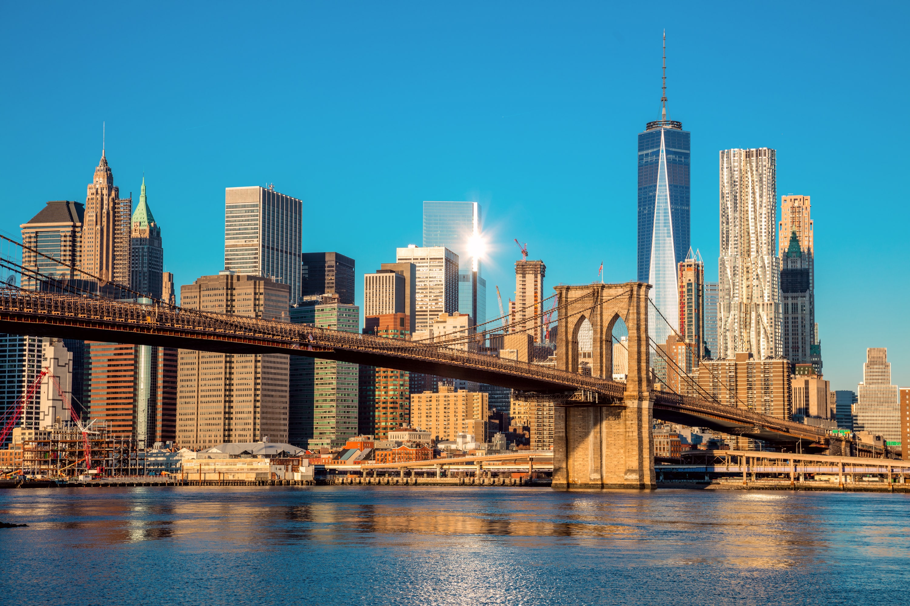

New York City
 New York City (NYC), often simply called New York, is the most populous city in the United States. With an estimated 2020 population of 8,253,213 distributed over about 302.6 square miles (784 km2), New York City is also the most densely populated major city in the United States.[11][12] Located at the southern tip of the State of New York, the city is the center of the New York metropolitan area, the largest metropolitan area in the world by urban area.[13] With almost 20 million people in its metropolitan statistical area and approximately 23 million in its combined statistical area, it is one of the world's most populous megacities. New York City has been described as the cultural, financial, and media capital of the world, significantly influencing commerce,[14] entertainment, research, technology, education, politics, tourism, art, fashion, and sports, and is the most photographed city in the world.[15] Home to the headquarters of the United Nations,[16] New York is an important center for international diplomacy,[17][18] and has sometimes been called the capital of the world.
New York City (NYC), often simply called New York, is the most populous city in the United States. With an estimated 2020 population of 8,253,213 distributed over about 302.6 square miles (784 km2), New York City is also the most densely populated major city in the United States.[11][12] Located at the southern tip of the State of New York, the city is the center of the New York metropolitan area, the largest metropolitan area in the world by urban area.[13] With almost 20 million people in its metropolitan statistical area and approximately 23 million in its combined statistical area, it is one of the world's most populous megacities. New York City has been described as the cultural, financial, and media capital of the world, significantly influencing commerce,[14] entertainment, research, technology, education, politics, tourism, art, fashion, and sports, and is the most photographed city in the world.[15] Home to the headquarters of the United Nations,[16] New York is an important center for international diplomacy,[17][18] and has sometimes been called the capital of the world.
 Situated on one of the world's largest natural harbors, New York City is composed of five boroughs, each of which is a county of the State of New York. The five boroughs—Brooklyn, Queens, Manhattan, the Bronx, and Staten Island—were created when local governments were consolidated into a single city in 1898.[21] The city and its metropolitan area constitute the premier gateway for legal immigration to the United States. As many as 800 languages are spoken in New York,[22] making it the most linguistically diverse city in the world. New York is home to more than 3.2 million residents born outside the United States,[23] the largest foreign-born population of any city in the world as of 2016.[24][25] As of 2019, the New York metropolitan area is estimated to produce a gross metropolitan product (GMP) of $2.0 trillion. If the New York metropolitan area were a sovereign state, it would have the eighth-largest economy in the world. New York is home to the highest number of billionaires of any city in the world.
New York City traces its origins to a trading post founded on the southern tip of Manhattan Island by Dutch colonists in 1624. The settlement was named New Amsterdam (Dutch: Nieuw Amsterdam) in 1626 and was chartered as a city in 1653.[27] The city came under English control in 1664 and was renamed New York after King Charles II of England granted the lands to his brother, the Duke of York.[27][28] The city was regained by the Dutch in July 1673 and was renamed New Orange for one year and three months; the city has been continuously named New York since November 1674.[29][30] New York City was the capital of the United States from 1785 until 1790,[31] and has been the largest U.S. city since 1790.[32] The Statue of Liberty greeted millions of immigrants as they came to the U.S. by ship in the late 19th and early 20th centuries,[33] and is a symbol of the U.S. and its ideals of liberty and peace.[34] In the 21st century, New York has emerged as a global node of creativity, entrepreneurship,[35] and environmental sustainability,[36][37] and as a symbol of freedom and cultural diversity.[38] In 2019, New York was voted the greatest city in the world per a survey of over 30,000 people from 48 cities worldwide, citing its cultural diversity.